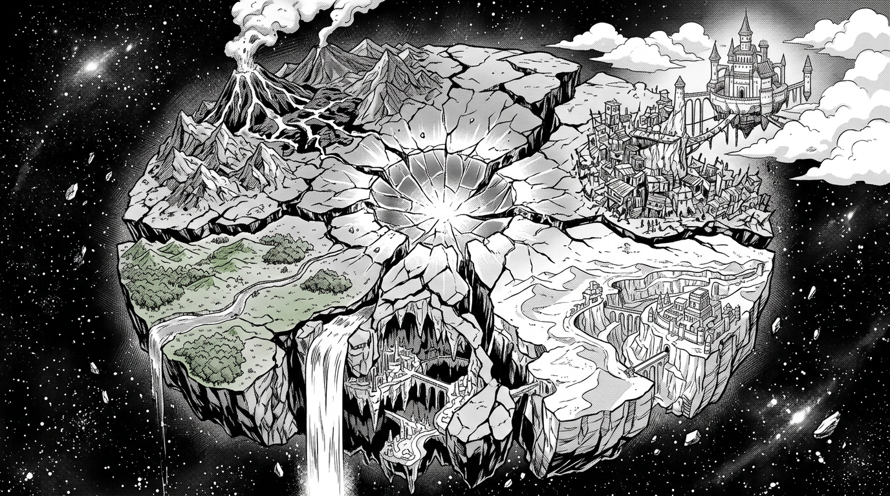

Мир, расколотый на шесть осколков

Ауракс — мир контрастов, болезненной красоты и вечной войны. Когда-то это был единый суперматерик, протянувшийся от полюса до полюса: зелёные равнины переходили в горные хребты, реки несли свои воды от ледников к тёплым морям, и ничто не разделяло людей, кроме расстояний. Но те времена стёрты из памяти. Никто не помнит, каким был мир до Раскола. Никто не знает, что его вызвало.
Сейчас Ауракс — это шесть земель, шесть полюсов силы, шесть цивилизаций, которые не столько живут, сколько выживают бок о бок. Каждая территория несёт на себе отпечаток стихии, которая однажды упала на неё с небес, и этот отпечаток определил всё: климат, архитектуру, культуру, саму суть людей, населяющих эти земли.
На западе — бескрайние равнины, где ветер не стихает ни на минуту. Когда-то здесь бродили шагающие города, но от них остались лишь остовы из ржавого железа и почерневшего камня, утопающие в высокой траве.
На юго-западе — вулканическая пустошь. Небо затянуто чёрно-красным пеплом, реки лавы прорезают ландшафт как шрамы. Воздух пахнет серой и раскалённым металлом. Здесь строят из обсидиана и чугуна, а огонь считают единственным законом.
На севере — царство воды. Бездонные ущелья, сотни водопадов, города, подвешенные на сталактитах над пропастью. Вечная радуга от брызг и нетающий лёд вместо мостов.
На юго-востоке — великая пустыня. Каньоны, скрывающие города-крепости. Медные вышки, притягивающие молнии. Провода, экзоскелеты, неоновые вывески в песчаной мгле.
Высоко в облаках — парящий замок. Мрамор и золото, сады с водой, текущей вверх, и деревьями, растущими из невесомых островов. А внизу, в вечной тени замка — трущобы, куда не попадает солнечный свет.
И где-то в океане — остров, которого нет на картах. Мёртвая природа, фиолетовый туман, земля, мягкая как плоть. О нём ходят только слухи, и каждый слух заканчивается словами: «Оттуда не возвращаются».
А в самом центре бывшего суперматерика, там, где когда-то стояли горы, — Мёртвая Зона. Гигантский кратер из кристаллизованного стекла, размером с целую страну. Гравитация искажена, магические штормы бушуют без остановки, и ни один живой человек не заходил дальше первых километров.
Что вызвало Раскол? Каждый народ верит в своё. Одни говорят — кара богов. Другие — природная катастрофа. Третьи шёпотом упоминают некое Кольцо, которое когда-то существовало в единственном экземпляре и вмещало в себя всю силу мира.
Но это, разумеется, лишь легенда.